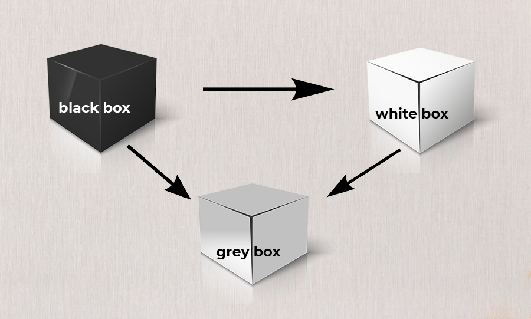

O teste de caixa cinza é um método de avaliação de software ou segurança que mistura as abordagens de caixa preta (sem ver o interior) e caixa branca (com acesso total ao código).
O testador tem conhecimento parcial da estrutura interna, como acesso a bancos de dados, documentações ou APIs.
O objetivo é identificar vulnerabilidades, falhas de segurança e problemas de desempenho, combinando a perspectiva do usuário com a análise do sistema.
Esse tipo de teste é útil para avaliar a segurança e a funcionalidade do software, permitindo uma abordagem mais abrangente e eficaz.